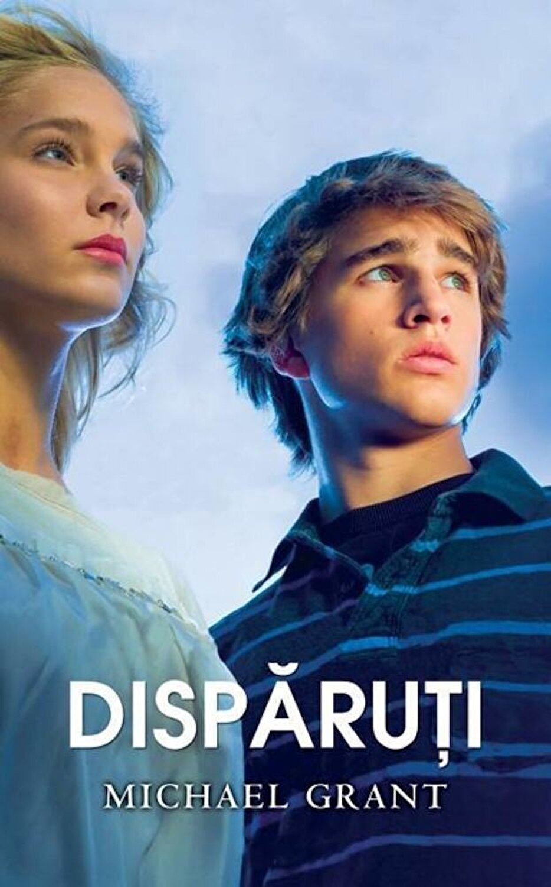
Disparutii (vol 1, 2 si 3)
Michael Grant
⭐⭐⭐⭐⭐
O lectura care mi-a fascinat mintea de prescolar prin ceea ce mi parea la vremea respectiva originalitate, dar era rezultatul evident al inspirarii din numeroase surse ale vremii curente.
Acum, student fiind, pot spune ca isi atinge cu dezavarsire scopul de impresiona cititorii prin lovituri de teatru din ce in ce mai diverse, fiind un epitom reprezentativ al literaturii
SF pentru adolescenti, avand in egala masura elemente de mister, romanta fecioreasca, supernatural, transpuse prin personale realiste, dar inspirationale, fructificand teme recurente ale contemporaneitatii.
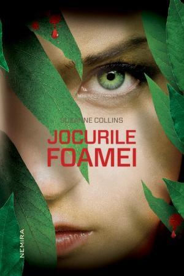
Jocurile foamei (vol 1, 2 si 3)
Suzanne Collins
⭐⭐⭐⭐⭐
O trilogie care, desi contemporana, s-ar fi putut inregistra cu usurinta in categoria marilor clasici. Collins reuseste sa faca numeroase teme literare avansate accesibil pentru marile mase,
portretizand o critica in stil Orwelian dintr-o perspectiva adolescentina de o maturitate covarsitoare, justificata de conditiile aprige in care au evoluat personajele centrale ale operei.
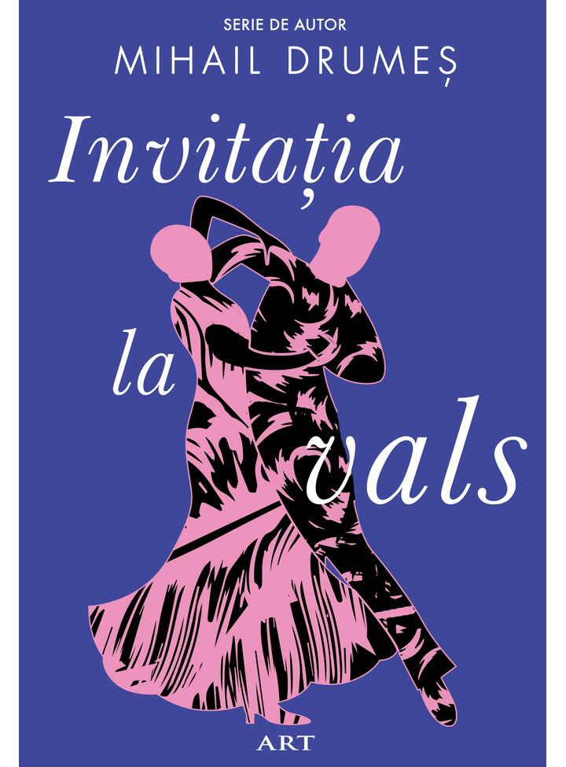
Invitatia la vals
Mihail Drumes
⭐⭐⭐⭐⭐
Desi Mihail Drumes nu este tocmai un autor contemporan, voi include aici volumele sale reprezentative, din pricina primirii sale negative din partea criticii literare a vremii respective.
Desi o opinie controversata, in randul elitelor romanesti, propun ideea ca Invitatia la vals, alaturi de celelalte 3 mari realizari ale lui Drumes, au adus una dintre cele mai mari contributii
ale literaturii romanesti. Intr-o epoca in care cititul in Romania era o activitate care lasa de dorit in ochii publicului obisnuit, Drumes a reusit sa o popularizeze, fiind cel mai vandut
scriitor al vremii sale. Invitatia la vals, desi la nivel intelectual nu e una dintre cele mai reusite lucrari ale sale, reuseste sa indeplineasca exact acest obiectiv, fiind cel mai adorat roman al Romaniei interbelice.
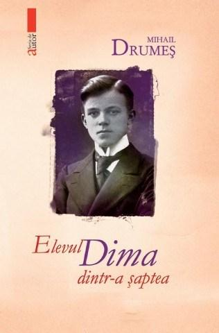
Elevul Dima dintr-a 7-a
Mihail Drumes
⭐⭐⭐⭐⭐
Cea mai completa lucrare a lui Drumes, incluzand atat elemente de aventura, tragismul specific, nostalgia din vremurile adolescentei si vointa deosebita a figurilor centrale ce se transpune in
omnipotenta.
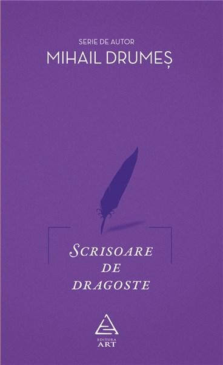
Scrisoare de dragoste
Mihail Drumes
⭐⭐⭐⭐⭐
Desi nu la fel de populara ca celelalte doua, "Scrisoare de dragoste" una dintre operele literare care au avut un impact deosebit in propria-mi dezvoltare. Inspirata in mod evident din Ion, de la pana la cele mai mici
particularitati tematice, pana la literalmente intreg firul narativ, dar transpus intr-o maniera mai citadina, volumul ofera un suflu mai digerabil prozei clasice din Romania, demonstrand ca pasiunea pentru obiectul
muncii si dorinta de satisfacere a receptorilor (ceea ce Rebreanu a omis) sunt pietrele de temelie ale literaturii de succes.
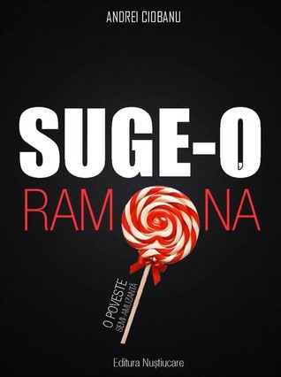
Suge-o Ramona (vol 1 si 2)
Andrei Ciobanu
⭐⭐⭐⭐⭐
In ciuda stigmei ce-si are originea in caracterul obscen al stilului narativ si al lipsei dezavarsite a dorintei de a dezvolta cultura cititorilor sai, volumul este, pentru mine, o carte extraordinara, care m-a ajutat
deosebit de mult sa cunosc mai bine lumea din jurul meu si m-a ajutat sa imi construiesc un caracter mai puternic. Cartea pare la prima vedere o povestire spusa "la bere cu baietii", intinsa pe 500 de pagini, ceea ce, in
esenta, si este. Tocmai aceasta paradigma ii permite sa elimina orice fel de prejudecata de natura elitista si sa prezinte o analiza a ideii de dragoste a unui om simplu, dar experimentat. In ceea ce priveste valoarea
de divertisment, cartea are un succes izbitor, reusind sa impresioneze peste doua milioane de romani dintre care multi nefamiliarizati cu lectura, prin rasturnari de situatie si umoristica la un nivel inalt.
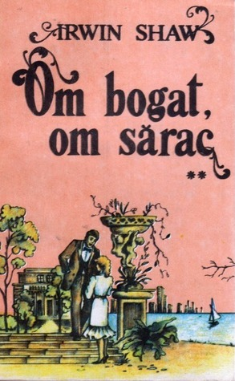
Om bogat, om sarac
Irwin Shaw
⭐⭐⭐⭐
O carte pe aceasta lista tot datorita caracterului sau non-elitist. Scrisa in urma cu 50 de ani, "Om bogat, om sarac" reuseste cu un realism dezavarsit sa contureze un fir narativ de tip bildungsroman centrat pe o
singura familie americana diversa, in care fiecare dintre cele 5 personaje fructifica cate o tipologie diferita tipica perioadei postbelice: elevul constiincios si ambitios, delicventul, fata cu moravuri usoare, fanatica
si avarul dezinteresat si dur. Parcursul fiecarui personaj in desfasurarea ampla de 700 de pagini si cateva zeci de ani este veridica. Pe masura ce am citit-o am ajuns sa uit treptat ca parcurg un volum literar, avand
mai degraba impresia ca imi este relatata o poveste de viata de catre un camarad.
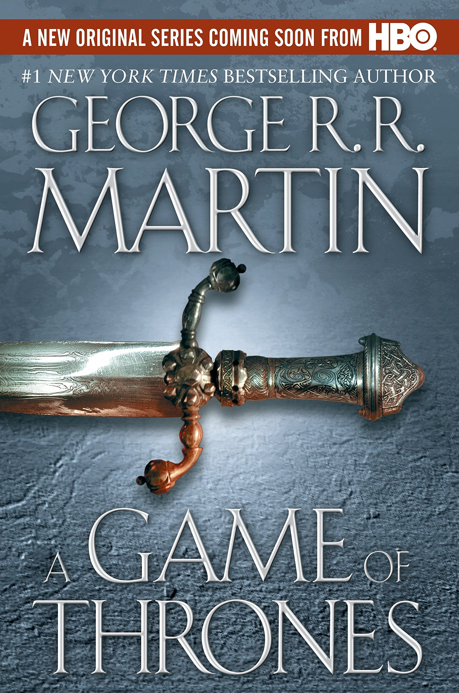
Urzeala tronurilor (vol 1)
George R. R. Martin
⭐⭐⭐⭐
Am citit cartea abia dupa ce am vizionat intreaga serie televizata si pot spune cu incredere ca nu am fost dezamagit. Desi evit sa parcurg acelasi continut sub forme diferite de expunere in conditii normale, la
indemnul unui prieten m-am induplecat sa depun aparentul efortul de a parcurge cele 800 de pagini. Fructificarea detaliata a temelor politice ample pe care a realizat-o Martin m-a facut sa realizez ca timpul investit,
desi destul de cantitativ, nu a fost deloc irosit. Volumul pierde totusi o stea din pricina tendintei autorului de a minimiza abilitatea de a rationa a unor personaje stabilite deja ca fiind deosebit de calculate pentru
a duce firul narativ in directia dorita(ceea ce faciliteaza aparitia punctului culminant, de cotitura, dar este deosebit de neplauzibil).
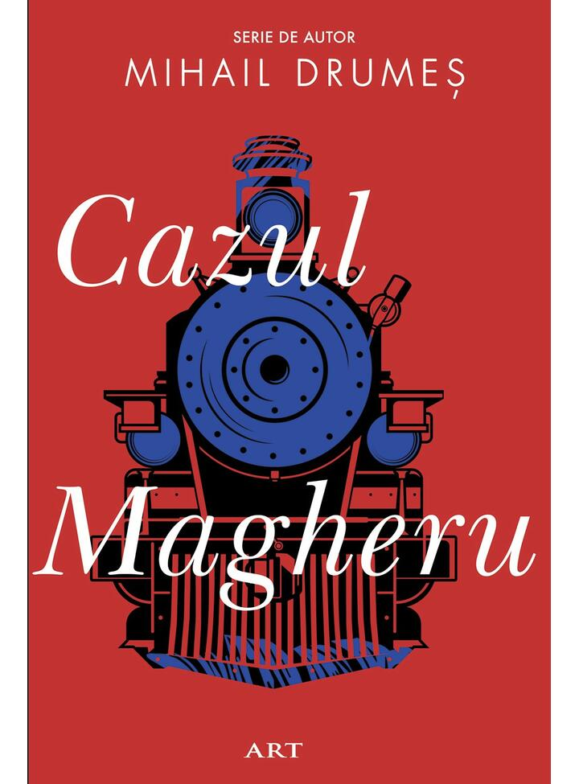
Cazul Magheru
Mihail Drumes
⭐⭐⭐⭐
O incercare admirabila a lui Drumes de a iesi din sfera literara a tragismului amoros, care reuseste sa contureze un realism psihologic veritabil in aria misterului si a genului politist. Cartea pierde o stea din
pricina vitezei inconsistente de derulare a firului narativ, care pe alocuri din pricina unui exces de portretizare interioara repetitiva si redundanta se transpune in monotonie (cel putin din viziunea unui cititor
nerabdator ca mine).
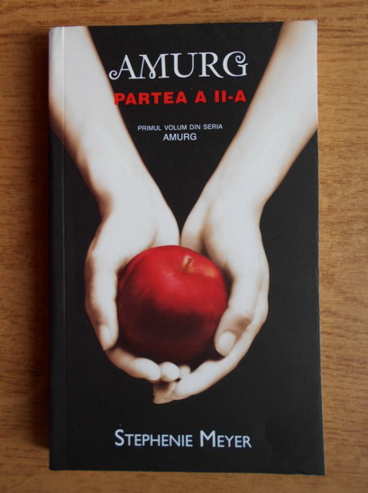
Amurg(vol 1, 2, 3, 4)
Stephenie Meyer
⭐⭐⭐⭐
Desi intalneste adesea o critica monumentala in randurile cititorilor de proza contemporana, franciza Amurg are si parti bune. Primul si ultimul volum catalizeaza cu un succes incontestabil, dar nu extraordinar
esenta temelor dragostei si a familiei, reusind sa portretizeze un ideal al sacrificiului de sine. Ceea ce a defavorizat mult trilogia este esecul autoarei in obiectivul asumat de a invalui povestea intr-o forma
accesibila tineretului autohton, imbinand supranaturalul si romanta intr-o maniera exagerata si, in special, siropoasa.
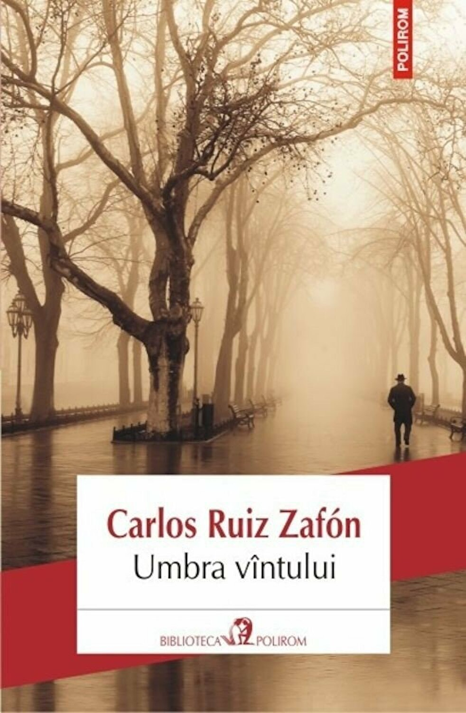
Umbra vantului
Carlos Ruis Zafon
⭐⭐⭐⭐
Volumul pune in scena o aventura completa din punct de vedere stilistic si tematic, imbinand aspecte ale intregului spectru literar al vremii postbelice. Structurat in doua planuri narative, in care cel
secundar este obiectul misterului, fiind dezvaluit de cel principal prin dezvaluiri treptate, produse de spiritul investivativ al trupei protagonistului, firul narativ reuseste sa impresioneze prin tehnica
telenovelei: fiecare plot twist este mai puternic decat cel anterior. Unicul minus este caracterul previzibil al operei, cauzat tocmai de tendinta ei de a agita actiunea la fiecare ocazie: un cititor vigilent
trebuie doar sa-si asume ca cea mai scandaloasa si evidenta posibilitate este cea ce urmeaza sa fie dezvaluita.
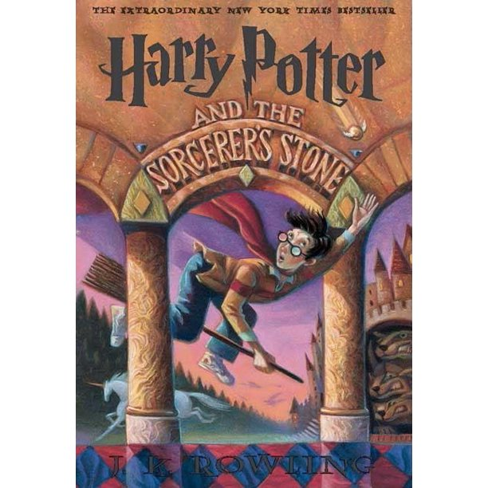
Harry Potter si Piatra Filozofala
J. K. Rowling
⭐⭐⭐⭐
O placere nevinovata a copilariei, dar care nu m-a impresionat mai departe de momentul lecturii, drept pentru care nu-mi amintesc suficiente despre ea cat pentru a realiza o recenzie satisfacatoare.
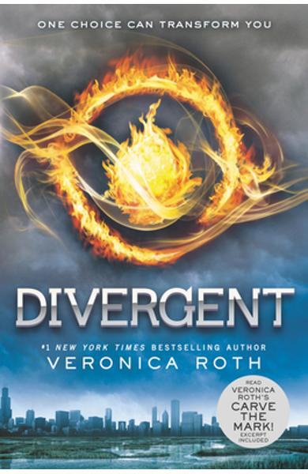
Divergent
Veronica Roth
⭐⭐⭐⭐
Fir epic tipic adolescentin si primitiv, care impresioneaza prin abordarea unor teme complexe de natura psihologica, politica si sociala. Personajele sunt inspirationale, emanand hotarare si tarie
de caracter, dar sunt invaluite in imaturitatea cliseica a adolescentei, de care volumul s-ar fi putut prea bine lipsi.
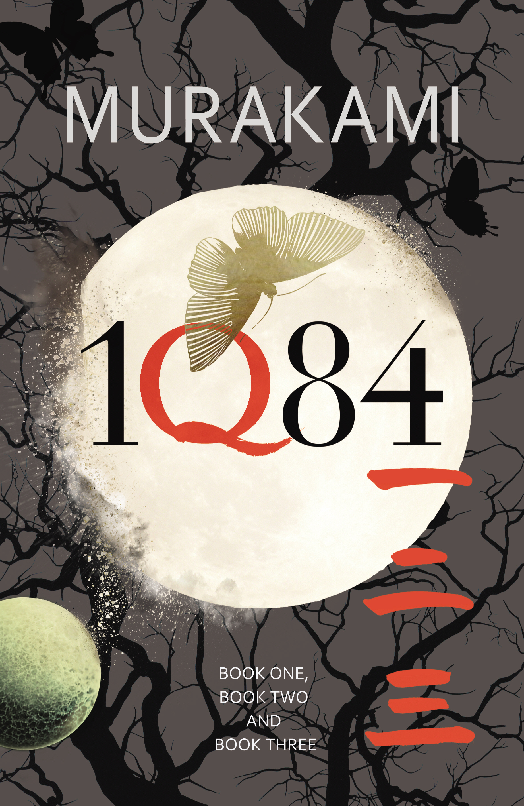
1Q84 (vol 1, 2 si 3)
Haruki Murakami
⭐⭐⭐⭐
O opera care in mod cert nu iese in evidenta prin firul sau narativ, avand de fapt un progres epic mai degraba lent pe parcursul celor 3 volume, dar care reuseste sa inspire admiratie pentru
personajele sale bine conturate in maniera realista, fiind caracterizate de o fermitate infrecventa in fata sinistrului inexplicabil de care sunt urmariti. Paranormalul este cufundat intr-un
mister care ramane deschis inspre interpretarea receptorului chiar si la finalul trilogiei. In ochii mei din nou nerabdatori, opera pierde o stea din pricina derularii lente a continutului si repetitie
la nivel de monolog interior.
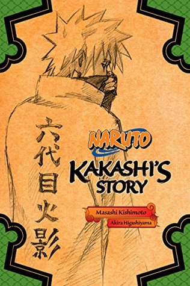
Naturo: Kakashi Hiden
Masashi Kishimoto
⭐⭐⭐⭐
O continuare la epica fascinanta de 720 de episoade din Naruto, pe care o recomand cu caldura oricarui fan al seriei originale.
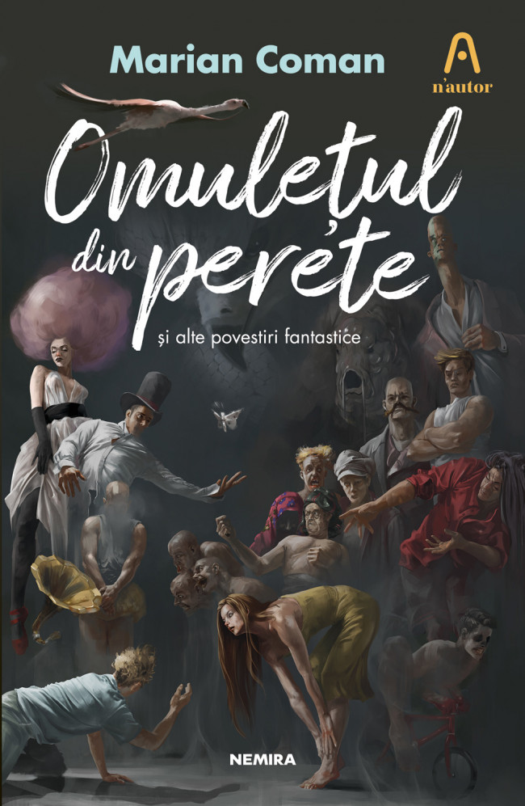
Omuletul din perete
Marian Coman
⭐⭐⭐⭐
Carte la care am fost chiar la lansare(poza din dreapta jos din prima rubrica a meniului principal), ideala pentru cei cei doresc o imbinare a bizarului incomprehensibil, din sfera horror-ului fantastic
si familiaritatea sumbra a regimului comunist romanesc. Cartea este structurata in 3 serii de povestiri scurte interconectate, care in maniera ermetica si printr-un exercitiu ezoteric de imaginatie al autorului
transmit ubicuitatea sentimentului de terorare in fata necunoscutului si al totalitarismului.